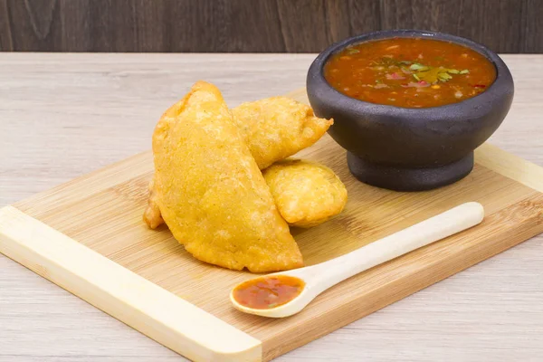

Colombian Empanadas
Fried Empanadas with beef and smashed potatoes filling

Colombian empanadas are a traditional colombian dish. It is commonly eaten with ají, a kind of spicy sauce. There are many ways to do Empanadas. Here comes the recipe but if you want a video about the process, here is one (in Spanish).
Ingredients
For the filling
- 1 medium Yukon potato peeled and cut into small cubes
- Salt and freshly ground black pepper
- 1 or 2 tomatoes
- 1 tablespoon vegetable oil
- 1/2 pound lean ground beef or pork
- 1/2 small white or yellow onion, finely chopped
- 1 scallion, finely minced
For the assembly
- 1 recipe Popcorn Masa or Standard Masa
- 2 quarts vegetable oil
Preparation:
- Prepare the filling: Place potato cubes in a saucepan, cover with water and season with 1 teaspoon salt. Bring to a boil, reduce to a simmer, and cook until cubes are completely tender. Drain and transfer to a bowl. Set aside.
- Peel the tomatoes. Discard the skin and grate the tomatoes. Set aside.
- Heat vegetable oil until shimmering. Add beef and cook, breaking it up with a wooden spoon until the pieces are completely cooked through.
- Add onion, scallion and cook, stirring, until the onion is softened but not browned. Immediately add the grated tomatoes and its juices. Cook until the mixture is dry.
- Transfer meat mixture to the bowl with potatoes and stir together with a fork. While mixing mash your potatoes. Taste and adjust seasoning. ¡Important! allow to cool completely.
- Assemble the empanadas: Divide masa into balls. Size is no really important but try to make them no greater than a golf ball.
- Working one ball at a time, place inside a plastic zip-top bag and press down to form a circle. Carefully remove from the bag and transfer to a clean cutting board or tray. Repeat with remaining dough balls, laying them out side by side. Cover the disks with a clean, lightly damp kitchen towel.
- Working one empanada at a time, place some meat mixture in the center of the disk. How much it would depend on the size of your empanada. Then lift the front and back edges and seal them at the top by gently pushing them together. Seal the empanada as if it were a burrito. Repeat with remaining empanadas.
- It is time to "fry" our empanadas. In a large wok heat 2 quarts oil. Using a metal spider or slotted spoon, lower empanadas into the hot oil one at a time. Cook them until they are crisp and golden and then transfer the empanadas to a paper-towel-lined plate or bowl. Season immediately with salt.
- Serve empanadas with a bowl of ají.